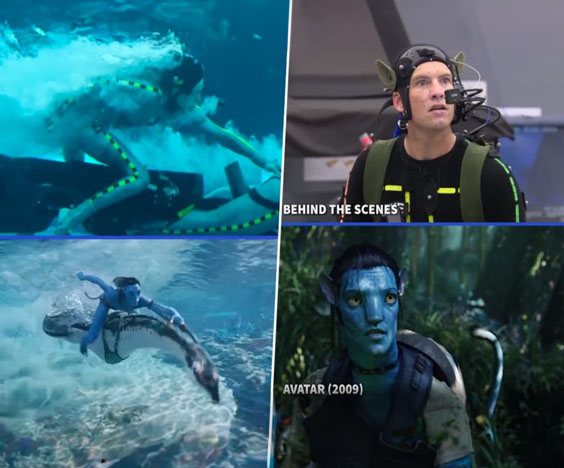

With the use of 3D models, it allows animators to bring the animation to life. Instead of having to draw each line and texture, like 2D animation, in 3D animation there only needs be 1 model. The animators will twist and turn the model as needed, like moving joints to simulate walking. In the end, it is a quicker, more efficient and more realistic way of creating films. Some films are created solely in a 3D world while some use a mix of real world and 3D assets.
In today's movies, CGI is a widely used technique when creating real life films but adding 3D models in it too. CGI is used when creating both backgrounds and characters. An example is in the popular movie series, Avatar. In these films they managed to get the animated characters so realistic by having actors act out the scenes with special gears and suits and after they have the moving and expression information thanks to the suits, they can transfer them onto a 3D model. This process gives life to the 3D models.
